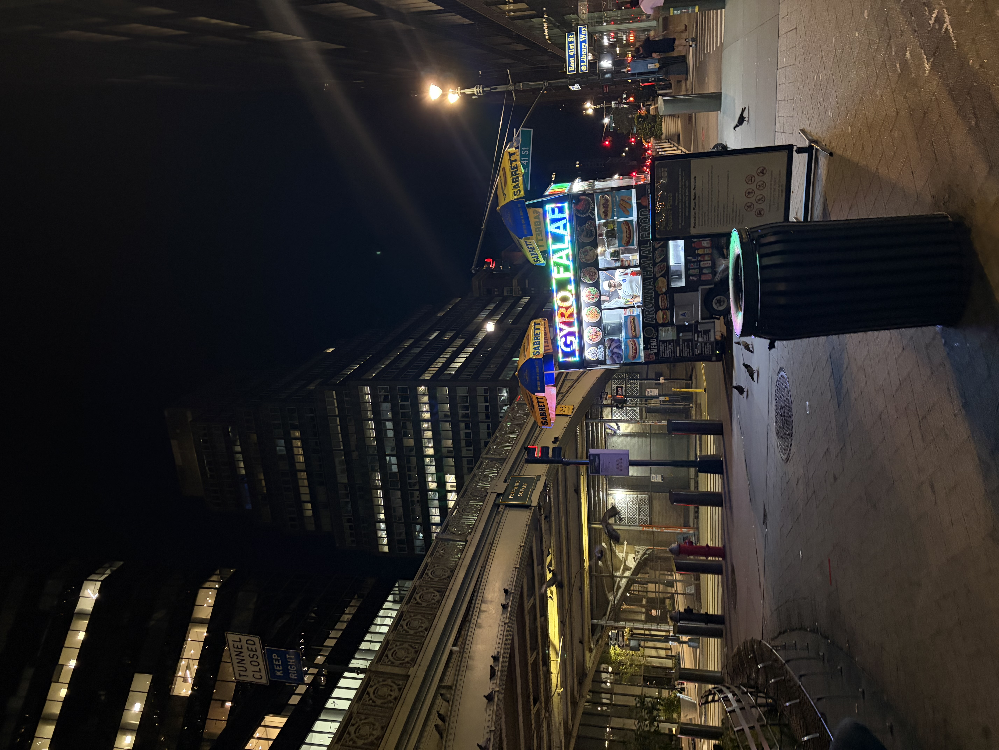
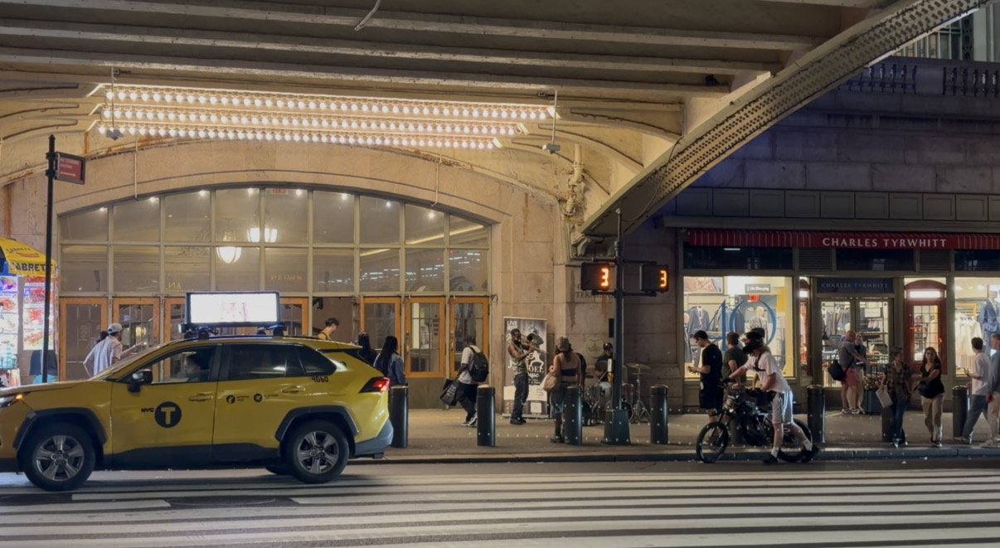
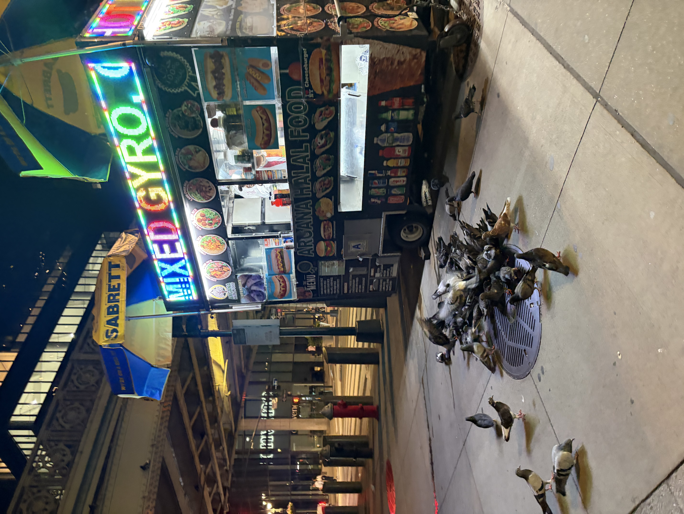

Street Musicians
I saw a group playing trumpets and drums on the street. The music was really good and louder than I expected. Some people stopped to watch them.
September 2026 · New York City

I walked around Grand Central at night. I usually pass this area without looking carefully, so this time I tried to notice the people, sounds, and things happening around me.

I saw a group playing trumpets and drums on the street. The music was really good and louder than I expected. Some people stopped to watch them.

I also saw a man feeding pigeons near a halal truck. There were so many pigeons around him. It looked a little awkward, but it was also funny and cute.
My favorite part was seeing these small moments in a busy area. I have been near Grand Central before, but it felt different when I slowed down and looked around.